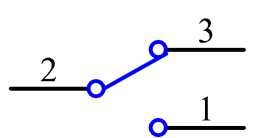
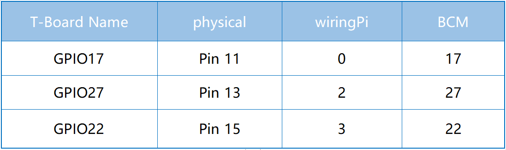

2.1.2 Schiebeschalter¶
Einführung¶
In dieser Lektion lernen wir, wie man einen Schiebeschalter benutzt. Normalerweise wird der Schiebeschalter als Netzschalter auf die Leiterplatte gelötet, aber hier müssen wir ihn in das Steckbrett einsetzen, damit er möglicherweise nicht festgezogen wird. Und wir verwenden es auf dem Steckbrett, um seine Funktion zu zeigen.
Komponenten¶

Prinzip¶
Schiebeschalter

Ein Schiebeschalter dient, wie der Name schon sagt, dazu, die Schaltleiste zu schieben, um den Stromkreis anzuschließen oder zu unterbrechen, und weitere Schaltkreise. Die am häufigsten verwendeten Typen sind SPDT, SPTT, DPDT, DPTT usw. Der Schiebeschalter wird üblicherweise in Niederspannungsschaltungen verwendet. Es hat die Merkmale Flexibilität und Stabilität und ist in elektrischen Instrumenten und elektrischem Spielzeug weit verbreitet.
So funktioniert es: Stellen Sie den mittleren Pin als festen Pin ein. Wenn Sie den Schieber nach links ziehen, sind die beiden Pins links verbunden. Wenn Sie es nach rechts ziehen, sind die beiden Pins rechts verbunden. Somit funktioniert es als Schalter, der Schaltkreise verbindet oder trennt. Siehe die folgende Abbildung:

Das Schaltungssymbol des Schiebeschalters ist wie folgt dargestellt. Der Pin2 in der Abbildung bezieht sich auf den mittleren Pin.
Kondensator
Der Kondensator ist eine Komponente, die Energie in Form von elektrischer Ladung speichern oder eine Potentialdifferenz (statische Spannung) zwischen ihren Platten erzeugen kann, ähnlich wie eine kleine wiederaufladbare Batterie.
Standardkapazitätseinheiten
Microfarad (μF) 1μF = 1/1,000,000 = 0.000001 = \(10^{- 6}\) F
Nanofarad (nF) 1nF = 1/1,000,000,000 = 0.000000001 = \(10^{- 9}\)F
Picofarad (pF) 1pF = 1/1,000,000,000,000 = 0.000000000001 = \(10^{- 12}\)F
Bemerkung
Hier verwenden wir 104 Kondensatoren (10 x 104PF). Genau wie beim Widerstandsring helfen die Nummer auf den Kondensatoren beim Ablesen der Werte, die auf der Platine montiert wurden. Die ersten beiden Ziffern stellen den Wert dar und die letzte Ziffer der Nummer bedeutet den Multiplikator. Somit repräsentiert 104 eine Potenz von 10 x 10 zu 4 (in pF) gleich wie 100 nF.
Schematische Darstellung¶
Verbinden Sie den mittleren Pin des Schiebeschalters mit GPIO17 und zwei LEDs mit Pin GPIO22 bzw. GPIO27. Wenn Sie dann an der Folie ziehen, leuchten die beiden LEDs abwechselnd auf.

Experimentelle Verfahren¶
Schritt 1: Bauen Sie die Schaltung auf.

Für Benutzer in C-Sprache¶
Schritt 2: Gehen Sie zum Ordner der Kode.
cd /home/pi/davinci-kit-for-raspberry-pi/c/2.1.2
Schritt 3: Kompilieren.
gcc 2.1.2_Slider.c -lwiringPi
Schritt 4: Führen Sie die obige ausführbare Datei aus.
sudo ./a.out
Während der Code ausgeführt wird, schalten Sie den Schalter links ein, und die gelbe LED leuchtet auf. rechts leuchtet das rote Licht auf.
Kode
#include <wiringPi.h>
#include <stdio.h>
#define slidePin 0
#define led1 3
#define led2 2
int main(void)
{
// When initialize wiring failed, print message to screen
if(wiringPiSetup() == -1){
printf("setup wiringPi failed !");
return 1;
}
pinMode(slidePin, INPUT);
pinMode(led1, OUTPUT);
pinMode(led2, OUTPUT);
while(1){
// slide switch high, led1 on
if(digitalRead(slidePin) == 1){
digitalWrite(led1, LOW);
digitalWrite(led2, HIGH);
printf("LED1 on\n");
}
// slide switch low, led2 on
if(digitalRead(slidePin) == 0){
digitalWrite(led2, LOW);
digitalWrite(led1, HIGH);
printf(".....LED2 on\n");
}
}
return 0;
}
Kode Erklärung¶
if(digitalRead(slidePin) == 1){
digitalWrite(led1, LOW);
digitalWrite(led2, HIGH);
printf("LED1 on\n");
}
Wenn der Schieber nach rechts gezogen wird, sind der mittlere und der rechte Stift verbunden. Der Raspberry Pi liest einen hohen Niveau am mittleren Pin, sodass die LED1 an und die LED2 aus ist
if(digitalRead(slidePin) == 0){
digitalWrite(led2, LOW);
digitalWrite(led1, HIGH);
printf(".....LED2 on\n");
}
Wenn der Schieber nach links gezogen wird, sind der mittlere und der linke Pins verbunden. Der Raspberry Pi zeigt einen niedrigen Wert an, sodass die LED2 leuchtet und die LED1 aus ist
Für Python-Sprachbenutzer¶
Schritt 2: Gehen Sie in den Ordner der Kode.
cd /home/pi/davinci-kit-for-raspberry-pi/python
Schritt 3: Ausführen.
sudo python3 2.1.2_Slider.py
Während der Code ausgeführt wird, schalten Sie den Schalter links ein, und die gelbe LED leuchtet auf. rechts leuchtet das rote Licht auf.
Kode
import RPi.GPIO as GPIO
import time
# Set GPIO17 as slide switch pin, GPIO22 as led1 pin, GPIO27 as led2 pin
slidePin = 17
led1Pin = 22
led2Pin = 27
# Define a setup function for some setup
def setup():
# Set the GPIO modes to BCM Numbering
GPIO.setmode(GPIO.BCM)
# Set slidePin input
# Set ledPin output,
# and initial level to High(3.3v)
GPIO.setup(slidePin, GPIO.IN)
GPIO.setup(led1Pin, GPIO.OUT, initial=GPIO.HIGH)
GPIO.setup(led2Pin, GPIO.OUT, initial=GPIO.HIGH)
# Define a main function for main process
def main():
while True:
# slide switch high, led1 on
if GPIO.input(slidePin) == 1:
print (' LED1 ON ')
GPIO.output(led1Pin, GPIO.LOW)
GPIO.output(led2Pin, GPIO.HIGH)
# slide switch low, led2 on
if GPIO.input(slidePin) == 0:
print (' LED2 ON ')
GPIO.output(led2Pin, GPIO.LOW)
GPIO.output(led1Pin, GPIO.HIGH)
time.sleep(0.5)
# Define a destroy function for clean up everything after
# the script finished
def destroy():
# Turn off LED
GPIO.output(led1Pin, GPIO.HIGH)
GPIO.output(led2Pin, GPIO.HIGH)
# Release resource
GPIO.cleanup()
# If run this script directly, do:
if __name__ == '__main__':
setup()
try:
main()
# When 'Ctrl+C' is pressed, the program
# destroy() will be executed.
except KeyboardInterrupt:
destroy()
Kode Erklärung
if GPIO.input(slidePin) == 1:
GPIO.output(led1Pin, GPIO.LOW)
GPIO.output(led2Pin, GPIO.HIGH)
Wenn der Schieber nach rechts gezogen wird, sind der mittlere und der rechte Pins verbunden. Der Raspberry Pi liest einen hohen Niveau am mittleren Pin, sodass die LED1 an und die LED2 aus ist.
if GPIO.input(slidePin) == 0:
GPIO.output(led2Pin, GPIO.LOW)
GPIO.output(led1Pin, GPIO.HIGH)
Wenn der Schieber nach links gezogen wird, sind der mittlere und der linke Pins verbunden. Der Raspberry Pi zeigt einen niedrigen Wert an, sodass die LED2 leuchtet und die LED1 aus ist.
Phänomen Bild¶